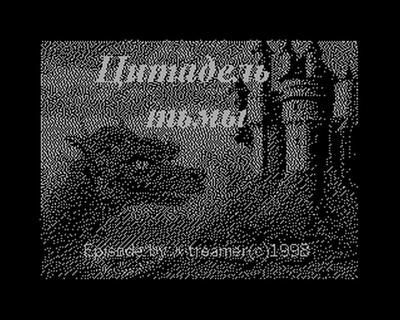
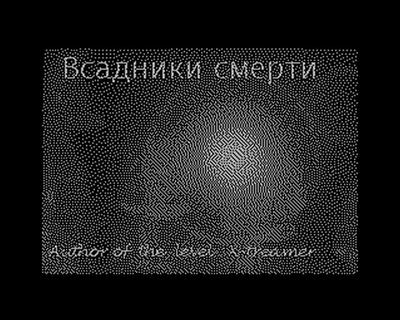
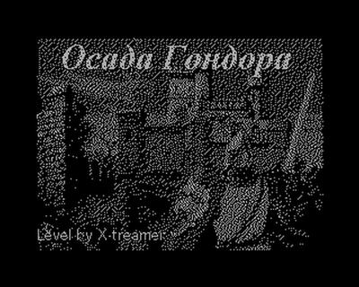
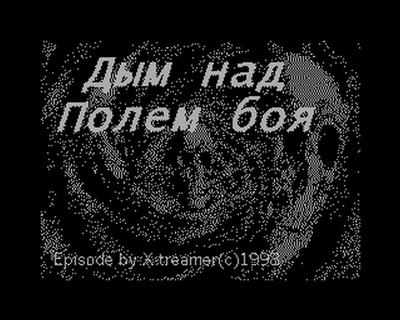
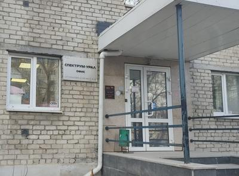
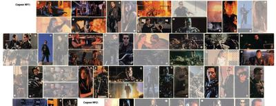

Новый видос! ZX Spectrum Next
Новый видос! Еще в прошлом году довелось поспектрумировать на ZX Spectrum Next, и вот только сейчас получилось смонтировать. В программе распаковка, обзор, зайчатки программирования и осмотр внутренностей

Новый видос! Еще в прошлом году довелось поспектрумировать на ZX Spectrum Next, и вот только сейчас получилось смонтировать. В программе распаковка, обзор, зайчатки программирования и осмотр внутренностей
Кстати, то, что я на третьем месте в дефолтной таблице в лёхиных "Цветных линиях" — это одна из важнейших строк в моём резюме 😄 Релиз под каждую платформу смотрю, и каждый раз приятно. А компилятор очень интересный. Вообще, беда с Си компиляторами на 8080/z80

Цитируемое сообщение (оригинал в Telegram "Алексей Морозов - Хобби и ретрокомпьютеры")
Привет Народ! Я закончил прибирать исходники компилятора Си для процессора 8080. А точнее, мне надоело это делать. Все иходники выложены сюда.
https://github.com/alemorf/c8080
Доделывать компилятор буду, когда буду им сам пользоваться.
Что бы проверить компилятор (после приборки) я решил перенести игру "Цветные Линии" на Микро 80. Не только для проверки. Нужна хотя бы одна цветная игра. Иначе, зачем я делал цвет?
В знакогенераторе компьютера Микро 80 есть символы делящие знакоместо на 4 равные части. Текстовый экран 64x25 превращается в графический 128x50. Вчера и сегодня я попробовал нарисовать графику для игры в таком низком разрешении. Что то даже получилось. Вы прямо сейчас можете запустить игру в online-эмуляторе. Для этого откройте эмулятор и нажмите вверху страницы "Загрузить Цветные линии".
https://alemorf.github.io/micro80_emulator/index.html?ColorLines
Недописанные исходники игры тут
https://github.com/alemorf/c8080/tree/main/examples/lines_for_micro80
Прощай, Izzy Azbeen 😢
В 2014 я плюнул на всё и сгонял в Бельгию на Black Sabbath. Рад, что удалось увидеть легенду вживую.

Устал от падения Вегаса каждые 10 минут, буду теперь в DaVinci Resolve монтировать. Вот шортс на пробу сваял. В процессе Давинчи упал всего один раз за два часа, что несомненный прогресс 😄
— Мам, давай купим Nintendo DS
— Нет, DS есть у нас дома
DS дома:
Взял по приколу двухэкранный переводчик. Все по хардкору, даже подсветки нет. Может будет когда-нибудь время прошивку поковырять.
Я вообще считаю, что черно-белые дисплеи недооценены сегодня. Что ЭЛТ, что ЖК. А ведь чб ЭЛТ выдают более чёткое изображение, чем цветной телевизор. Ну а монохромный ЖК от одной батарейки способен проработать месяц и больше.

Новый видос! Дизассемблируем игру Short Circuit и дописываем туда функционал. Началось всё с того, что Михаил Перцовский попросил просто поглядеть, что там у игры внутри, но я не смог вовремя остановиться 😄
https://www.youtube.com/watch?v=FLSMSu01vnE
Все файлы тут - https://github.com/I-N-K-9/channel/tree/master/20250425_ShortCircuit (сама готовая игра - SHORT_2_fix.TAP)
И копия видео в ВК на всякий — https://vk.com/border_not_pi?z=video-186630457_456239090
Спектруму уже 43! С днюхой! Ещё нас всех переживешь! 🎉
Новые уровни к "Черному ворону" скачать бесплатно без смс!
В сети есть дискета с новыми уровнями к "ЧВ" за авторством X-treamer/Infotek (Владимир Николаев, г. Екатеринбург). Сделаны они были на "Кворуме", и дискета тоже была для "Кворума" (причем, Кворума-256). Сам диск в сети лежит давно, но запустить его никак не получалось, уровни висли сразу после старта. А вот вчера я посидел с отладчиком, нашел странности в выборке страниц памяти, пофиксил и запустил. Сконвертировал в SNA для удобства, работать будет на любом 128, не только на Кворуме. Встречайте, уровни, в которые никто не играл 25 лет! (но это не точно)
Почему не запускалось — непонятно. Точнее, там даже кажется понятным, что в таком виде оно бы никогда и не запустились — сама игра раскладывается в 8 стандартных страниц ZX-128, но после запуска с чего-то вдруг врубает 9-ю страницу и смело делает туда JP. Я-то всегда думал, что это у меня образ битый, но тут от Камиля Каримова получил точно такой же, ещё в 90-е сделанный. Видимо, у автора была другая раскладка памяти, но зачем? Загадки, кругом загадки.




Обнаружена штаб-квартира уральского спектрумизма!

С первым апреля!
Я когда-то в шутку собирался коллекционировать фотографии наклеек "Терминатора-2" на спектрумах. Но... в какой-то момент это перестало быть шуткой, и я реально начал складывать в папочку все встречающиеся фото. Ну а сегодня в честь праздника хочу поделиться своей коллекцией с вами. Может и у вас есть "Ленинград" с такой наклейкой? Присылайте фото! 🙏 Там совсем немного осталось, чтобы собрать первую из двух выходивших серий.
https://www.tsidaev.ru/zx_terminator_gum/

{kind=link}
{kind=link}
{kind=link}
{kind=link}
{kind=link}
{kind=link}
{kind=link}